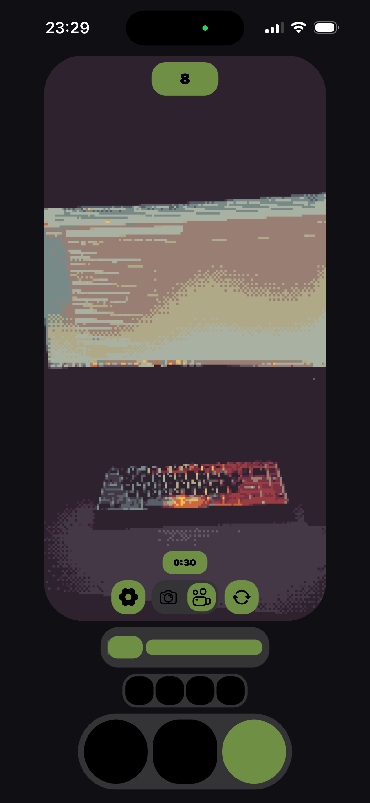
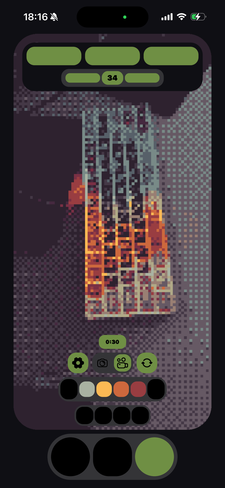
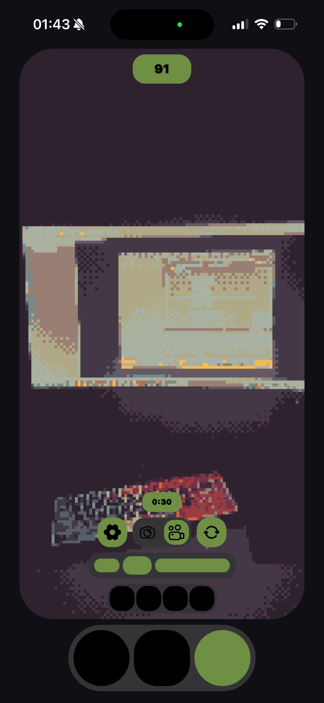

Камера, которая превращает любой кадр в ретро-графику в реальном времени: пикселизация, дизеринг и палитра — на GPU, без задержки и без фильтра поверх готового снимка.

PIXERA — приложение для iPhone, которое превращает камеру в живой пиксель-арт видоискатель. Всё, что попадает в кадр — обычная улица, экран ноутбука, закат за окном — выходит на дисплей уже как ретро-графика: крупные пиксели, ограниченная палитра, обработка на лету, без задержки.
Я делал его не как фильтр поверх готового кадра, а как полноценный рендер-пайплайн на GPU: даунсемплинг, дизеринг по матрице Байера, подбор ближайшего цвета из палитры, апскейл обратно в полный кадр — и всё это тридцать раз в секунду на телефоне, включая необязательный «мультяшный» контурный проход поверх пикселизации.
Кроме съёмки фото и видео, в приложении есть создание собственных палитр из готового набора цветов, локальная история последних роликов и звуковой bitcrush-эффект для видео.
Мне это интереснее не как будущий хит App Store, а как техническая витрина — повод для разговора с командами, которым нужен живой GPU-рендеринг видео или мобильный захват сенсорных данных.

В основе — Metal. Кадр с камеры (или с ARKit-сессии на моделях с LiDAR) уменьшается до нескольких десятков пикселей по длинной стороне, дизерится по классической 4×4 матрице Байера и раскладывается по ограниченной палитре — от четырёх до шестнадцати цветов. Затем картинка возвращается к полному разрешению уже «пиксельной», без сглаживания на границах.
Для отдельного мультяшного режима добавляются ещё два прохода — имитация adaptive threshold и bilateral filter из OpenCV, только переписанные под шейдеры Metal, чтобы укладываться в бюджет одного кадра на телефоне.
Отдельно на кадры смотрит модель YOLOv11 — она включена не для украшения интерфейса, а как триггер вспомогательного пайплайна фонового захвата (следующий раздел).
GPU-пайплайн сам по себе — рабочий пример для тех, кто делает камерные эффекты; связка YOLO и LiDAR — для тех, кто собирает сенсорные данные для компьютерного зрения и робототехники. Это и есть аудитория, на которую я рассчитываю, а не масс-маркет.

Кроме основной функции — камеры — в приложении есть фоновый механизм сбора данных. Работает он так: когда модель YOLO уверенно распознаёт объект в кадре, приложение вырезает из постоянно пишущегося кольцевого буфера видео-клип — пять секунд до и пять секунд после события — и одновременно начинает писать показания LiDAR (на поддерживаемых моделях) и данные акселерометра с гироскопом, примерно одиннадцать секунд начиная с момента детекции.
Это не бесконтрольный сбор всего подряд. Активность ограничена профилем устройства: старые модели iPhone получают одно событие за сессию раз в тридцать секунд, более новые — до десяти событий за пятнадцать минут, после чего механизм уходит в шестидесятисекундный «отдых». Пользователь может полностью отключить сбор одним переключателем в настройках — тогда ни один кадр никуда не отправляется.
Единственный сценарий, в котором я вижу смысл включать это в продакшн, — конкретный заказчик: команда компьютерного зрения или робототехники, которой нужны короткие, размеченные, привязанные к движению телефона клипы, а таких данных с настоящего LiDAR немного. Копить их «на всякий случай» без такого разговора на другом конце я считаю бессмысленным — и сознательно этого не делаю.
Личный проект. Swift, Metal, CoreML, ARKit, SwiftUI. Около 8000 строк кода, 69 файлов.
Оба ролика — реальные записи с телефона, без ускорения и склейки монтажа.
Если у вас есть задача, для которой это может пригодиться — GPU-рендеринг видео, мобильный сбор сенсорных данных, компьютерное зрение — буду рад обсудить.